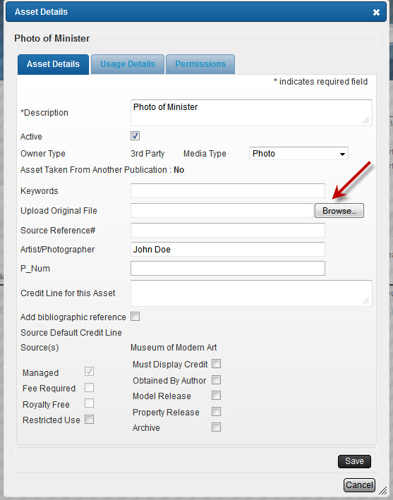

PROJECT LANDING PAGE (Continued)
ASSET ACTIONS
Located above your assets list is a drop-down menu entitled Actions. This drop-down menu gives you many options concerning the management of your assets.

Duplicate asset: Allows you to duplicate an asset that has been entered.
Delete/cancel asset: Allows you to delete or cancel an asset. If the asset does not have anything associated with it, it will be deleted and no long appear on the assets list. If the asset does have something associated with it, it will appear on the assets list with a watermark saying “cancelled.”

Uncancel asset: Allows you to uncancel an asset. The “cancelled” watermark will no longer appear if you uncancel an asset.

View/edit asset details: Allows you to edit many details concerning an asset. You can also upload the original file for reference.

Insert new row before/after: Allows you to add rows before and/or after an asset.
SOURCE ACTIONS
Next to the Asset Details tab is the Sources tab. This section lists the sources associated with the project assets. An Actions drop-down menu is also available under the Sources tab. This drop-down menu gives you the option to Create forms.

To create a form simply select the appropriate source, go to Actions, and click "Create forms." This will open up the Create forms wizard. This wizard will give you the option to Create a permissions request form to send to multiple sources or Create a purchase order to send to multiple sources. Once you select your desired option and click Next, the wizard will lead you through the same steps as in step 8.

The Sources tab also gives details of the source within the context of the project, such as contact name, contact email, and number of assets. It also shows the status of the asset. If the permission is complete, you can see the details of the contract by clicking "View."